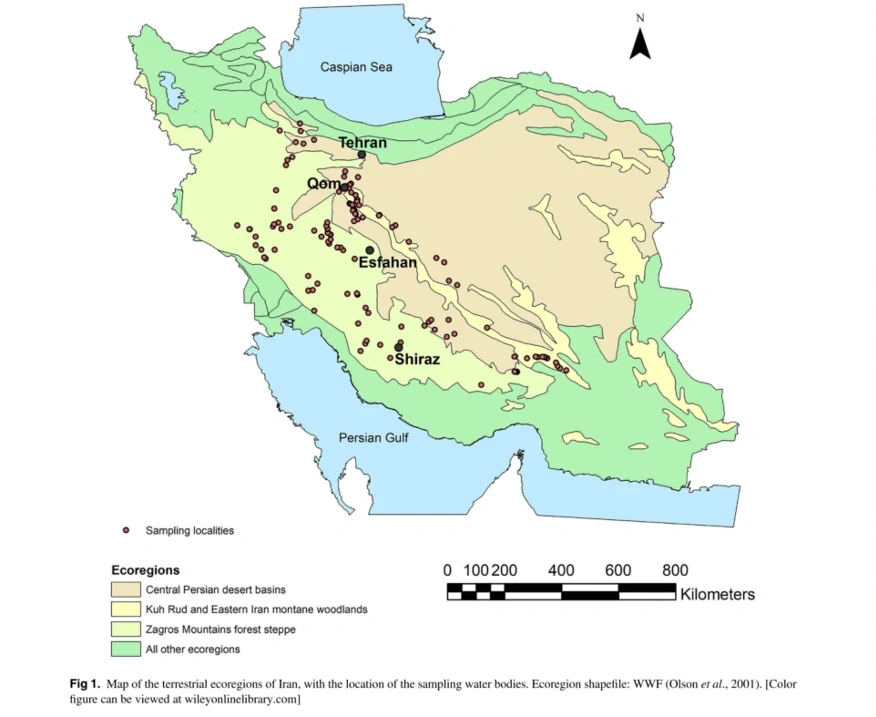
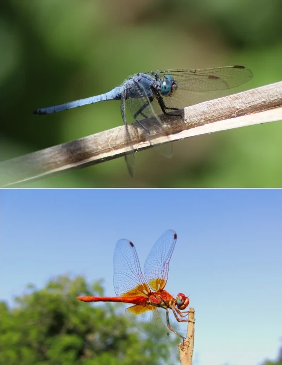
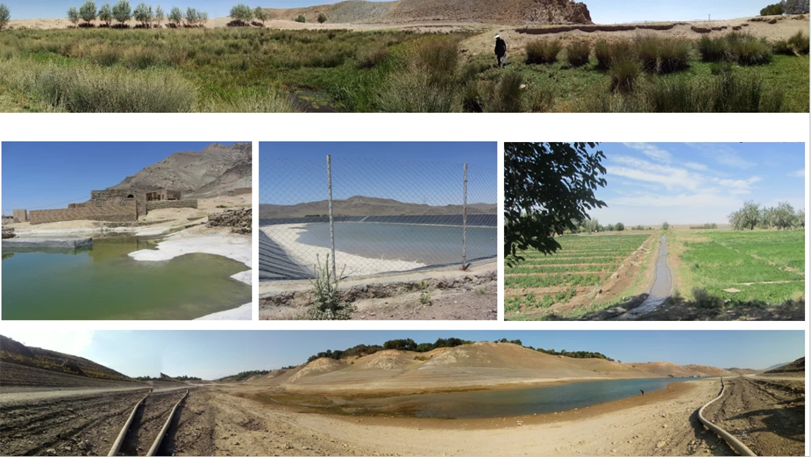

← All projects2018–2021 / Research I Led
Research project Research I Led
Odonata Diversity, Distribution, and Community Ecology in Arid Iran
2018–2021



This project combined faunistic surveys and community ecology to investigate freshwater biodiversity in the arid and semi-arid regions of Iran. Among the first ecological studies of its kind in the region, it examined how climate, landscape characteristics, and local habitat conditions shape species diversity and community composition. The findings challenged the perception of arid landscapes as biodiversity-poor, revealing remarkably diverse freshwater communities and the importance of protecting these often-overlooked habitats from increasing environmental pressures.